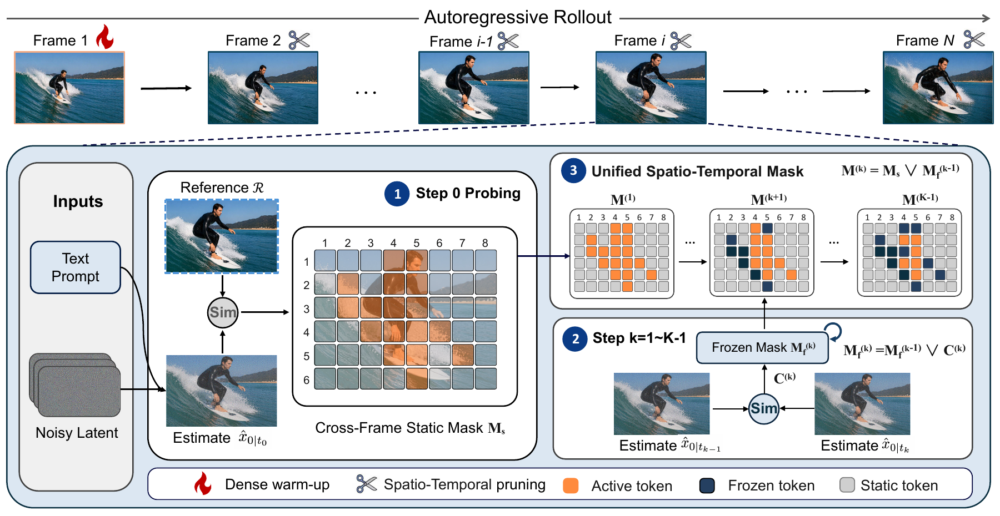

View figure ↗Preprint · 2026
Training-Free Predictive Spatio-Temporal Token Pruning for Few-Step Autoregressive Video Diffusion
Predicting token redundancy online to accelerate few-step video generation by 1.52–3.20×, without retraining.